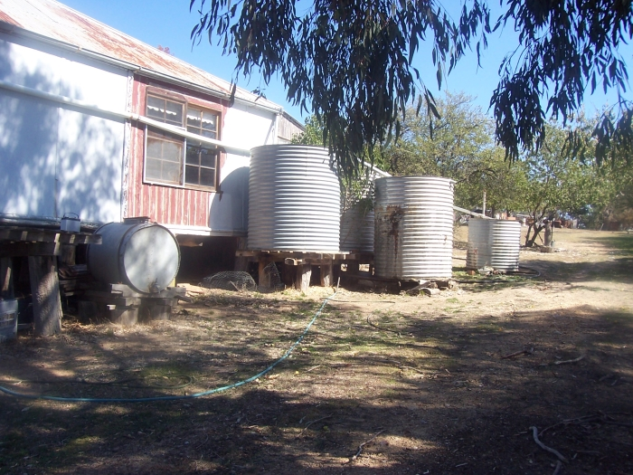
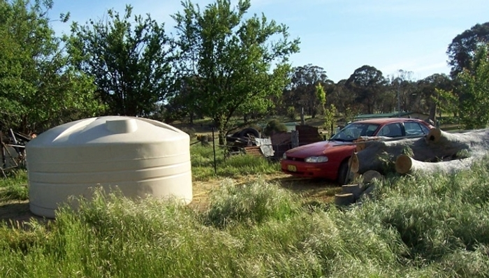
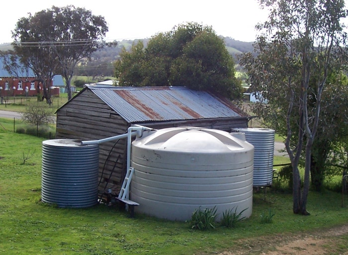

The Tanks
Being in an area that is usually pretty dry, storing water and moving it around is pretty important. This pic from when we first saw the house in 07 shows how dry it was then:

In 08 we busted a gut one weekend moving the two biggest of those tanks up to where our new shed was going to go. Details in a
separate page.
That all changed in late 09 when we realised if we moved the plastic tank we got earlier that year up to the back of the property we could have gravity-feed for everyday water and just pump once a month from the large plastic tank we got later. Here's how we towed the tank up the back:

Then we moved the original tanks down near the main tank so they could get the overflow:

Not enough about tanks already?
Learn about the early rearranging of tanks here.
Home
House
October 2013
Asbestos
Verandah
Tanks
Fort Veg
Orchard
Pacas